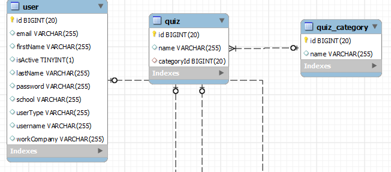
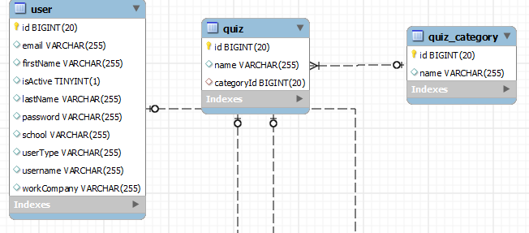

Get Started
The complete example code please go to my github : Source Code
Case Study
 

So i will explain how to use the orm. To make more clear. I used this entities example
So, we must make a relation mapping, like this:
public class QuizTables extends Tables {
private static final String userTableName = "user";
private static final String quizTableName = "quiz";
private static final String quizCategoryTableName = "quiz_category";
public Table userTable;
public Table quizCategoryTable;
public Table quizTable;
{
userTable = new Table(
userTableName,
"id",
new ArrayList(Arrays.asList(
new FieldMapping("id", "id", DataType.INTEGER),
new FieldMapping("email", "email", DataType.STRING),
new FieldMapping("firstName", "firstName", DataType.STRING),
new FieldMapping("isActive", "isActive", DataType.BOOLEAN),
new FieldMapping("lastName", "lastName", DataType.STRING),
new FieldMapping("username", "username", DataType.STRING),
new FieldMapping("userType", "userType", DataType.STRING_ENUM)
))
);
quizCategoryTable = new Table(
quizCategoryTableName,
"id",
new ArrayList(Arrays.asList(
new FieldMapping("id", "id", DataType.INTEGER),
new FieldMapping("name", "name", DataType.STRING)
))
);
quizTable = new Table(
quizTableName,
"id",
new ArrayList(Arrays.asList(
new FieldMapping("id", "id", DataType.INTEGER),
new FieldMapping("name", "name", DataType.STRING),
new FieldMapping("category", "categoryId", quizCategoryTable, DataType.OBJECT, QuizCategory.class)
))
);
mappingMap.put(User.class,userTable);
mappingMap.put(QuizCategory.class,quizCategoryTable);
mappingMap.put(Quiz.class,quizTable);
}
public QuizTables() {
}
}
Let me explain the code, one by one :
Tables Class
public class QuizTables extends Tables
This class are main configuration. It will contain Class Table and Map
Class Table will contain fields and property mapping, and Map
Table Class
public Table userTable;
{
userTable = new Table(
userTableName,
"id",
new ArrayList(Arrays.asList(
new FieldMapping("id", "id", DataType.INTEGER)...
))
);
Create Table Class, with constructor that contain table name, table field of primary key, and list of field mapping
Field Mapping
new FieldMapping("id", "id", DataType.INTEGER)
Field mapping are contain property name,field name, and data type
Define Mapping
mappingMap.put(User.class,userTable);
mappingMap.put(QuizCategory.class,quizCategoryTable);
mappingMap.put(Quiz.class,quizTable);
Handles class had variable mappingMap. To link a class with table variable.
Define Orm Class
orm.setCon(con);
orm.setTables(new QuizTables());
Orm class must give JDBC Connection and Tables class
Generate Select Query and Get Class result
String selectTableSQL = quizTables.getSelectQuery(Quiz.class);
PreparedStatement statement = orm.getCon().prepareStatement(selectTableSQL);
List quizes = orm.getQueryResult(statement,Quiz.class);
Quiz quiz = quizes.get(0);
assertEquals(1L,(long) quiz.getId());
assertEquals("Computer Basic 1",quiz.getName());
To generate sql query call tables.getSelectQuery(Quiz.class). This method will give sql query that